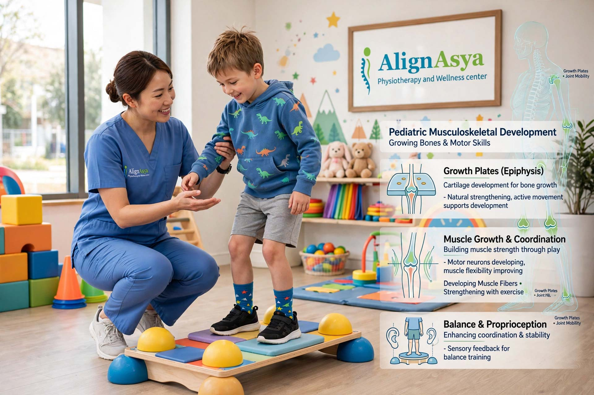

Pediatric Physiotherapy · 8 min read
Pediatric Physiotherapy for Children: Signs, Benefits & What to Expect
How child physiotherapy supports healthy development — from torticollis and delayed milestones to cerebral palsy, toe walking and everyday movement confidence.
By AlignAsya Physiotherapy Team · August 2026

Every child develops at their own pace — but sometimes, that pace needs a little extra support. Pediatric physiotherapy (also called pediatric physical therapy or child physiotherapy) is a specialized branch of physiotherapy designed to help infants and children build strength, improve coordination, and reach important movement milestones, whether they're learning to roll, sit, crawl, walk, or run.
If you've been searching for "pediatric physiotherapy near me" or wondering whether your child could benefit from physiotherapy for kids, this guide walks through the common signs, the conditions pediatric physiotherapists treat, and what a typical session looks like.
What is pediatric physiotherapy?
Pediatric physiotherapy is a family-centered, play-based approach to helping children move and function at their best. Unlike adult physiotherapy, which often focuses on pain relief and rehabilitation, pediatric physical therapy is heavily focused on development — supporting babies and children to acquire motor skills, improve balance and coordination, and move with confidence through every stage of growing up.
A pediatric physiotherapist is trained to assess movement, posture, strength, flexibility, and coordination in children, and to design individualized therapy plans that feel like play rather than treatment.
Children respond best to therapy that feels like play, not work. When movement is fun, kids engage naturally — and that's when real progress happens.
Signs your child may need a physiotherapy assessment
Parents are often the first to notice that something feels slightly "off" with their child's development, even when they can't quite name it. Some of the most common reasons families seek pediatric physiotherapy in Mira Road and Mumbai include:
- Delayed milestones — not rolling, sitting, crawling, or walking around the typical age ranges.
- Torticollis (head tilt) — a baby who persistently tilts their head to one side or has trouble turning their head both ways.
- Flat head syndrome (plagiocephaly) — flattening on one side of the back or side of the head.
- Toe walking — a child who walks primarily on their toes beyond the early walking stage.
- Frequent falls or poor balance — more unsteadiness than expected for the child's age.
- Unusual gait patterns — in-toeing, out-toeing, limping, or an asymmetrical way of walking or running.
- Low muscle tone or stiffness — a "floppy" or unusually stiff body in an infant or young child.
- Avoidance of movement — a child who avoids climbing, jumping, or physical play compared with peers.
None of these signs automatically means your child needs therapy — but they are good reasons to have a conversation with your pediatrician or to book a physiotherapy screening. Early intervention is one of the strongest predictors of good outcomes in pediatric rehabilitation.
What conditions do pediatric physiotherapists treat?
Pediatric physical therapy supports a wide range of conditions and developmental concerns:
1. Developmental delays
When a child is behind on motor milestones, structured, play-based physiotherapy can help them build the strength, coordination, and confidence to catch up at their own pace.
2. Torticollis and positional plagiocephaly
Congenital muscular torticollis — a tight neck muscle that causes a baby to tilt their head — is very treatable with early physiotherapy. Gentle stretching, positioning guidance, and parent education can resolve most cases within weeks to months.
3. Cerebral palsy
For children with cerebral palsy, physiotherapy is a lifelong companion. It focuses on maintaining range of motion, building functional strength, improving mobility, and supporting independence with adaptive strategies.
4. Postural and gait abnormalities
In-toeing, out-toeing, flat feet, toe walking, and other gait concerns can often be improved with targeted strengthening, stretching, and movement retraining.
5. Congenital and neurological conditions
Children born with conditions such as spina bifida, Down syndrome, or other neurological or genetic conditions benefit enormously from ongoing physiotherapy to support development and function.
6. Sports and activity injuries in children
Young athletes get injured too. Age-appropriate rehabilitation helps children return to sport safely while protecting their growing bones and joints.
What to expect in a pediatric physiotherapy session
If you're considering physiotherapy for your child for the first time, here's what a typical session with a pediatric physiotherapist looks like:
A thorough assessment first
The first session is about understanding your child — their birth history, developmental timeline, current movement patterns, strengths, and challenges. The physiotherapist will observe your child's posture, strength, flexibility, balance, and motor skills through play-based activities.
Play is the treatment
Rather than clinical drilling, pediatric physiotherapy uses toys, games, music, and fun movement challenges to engage children. A child may not realize they're "working" — they're playing while building strength and coordination.
Parent and caregiver involvement
You are your child's most important therapy partner. Your physiotherapist will teach you simple exercises, positioning tips, and activities to continue at home between sessions, because consistency is what drives progress.
Coordination with other specialists
Where useful, pediatric physiotherapists work alongside pediatricians, occupational therapists, speech therapists, and orthopedic specialists to keep your child's care aligned and comprehensive.
How early should physiotherapy start?
There's no fixed minimum age. Pediatric physiotherapy can begin in early infancy — sometimes within the first few weeks or months of life for concerns like torticollis, plagiocephaly, or general low muscle tone. Early intervention matters: the developing brain is most adaptable in the first few years of life, which is why addressing movement concerns early can lead to faster, more lasting improvements.
Finding the right pediatric physiotherapist
Choosing the right pediatric physiotherapist is about finding someone who is not only skilled, but also patient, warm, and able to connect with your child. Ask about their experience with children, especially with your child's specific concern, and look for a clinic where your child will feel safe and comfortable.
At AlignAsya in Mira Road, Mumbai, Dr. Renu Saroj and her team provide compassionate, child-friendly pediatric physiotherapy — using a play-based approach that keeps children engaged while working toward meaningful goals alongside parents and caregivers.
Your next step
If you have concerns about your child's development or movement — trust your instinct. An early assessment gives you clarity, and even when no therapy is needed, it offers peace of mind. When support is useful, starting early gives your child the very best chance to move, grow, and thrive.
Concerned about your child's movement or development?
Book a pediatric physiotherapy assessment with the AlignAsya team in Mira Road, Mumbai, and get a plan built around your child's needs.
Book an AppointmentThis article is for general education and is not a substitute for individualized medical assessment or treatment.
← Back to all articles